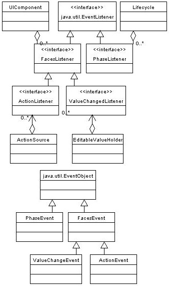

Interfaces describing events and event listeners, and concrete event implementation classes. All events extend from {@link javax.faces.event.FacesEvent} and all listeners extend from {@link javax.faces.event.FacesListener}.
For your convenience here is a UML class diagram of the classes in this package.
